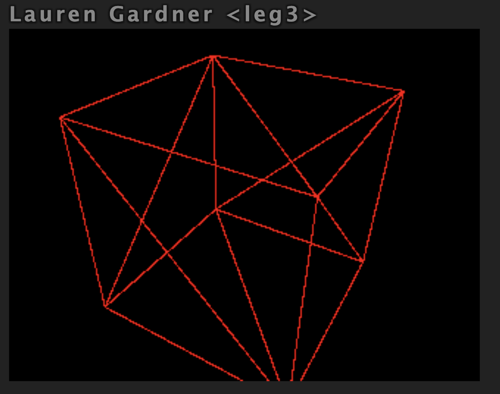
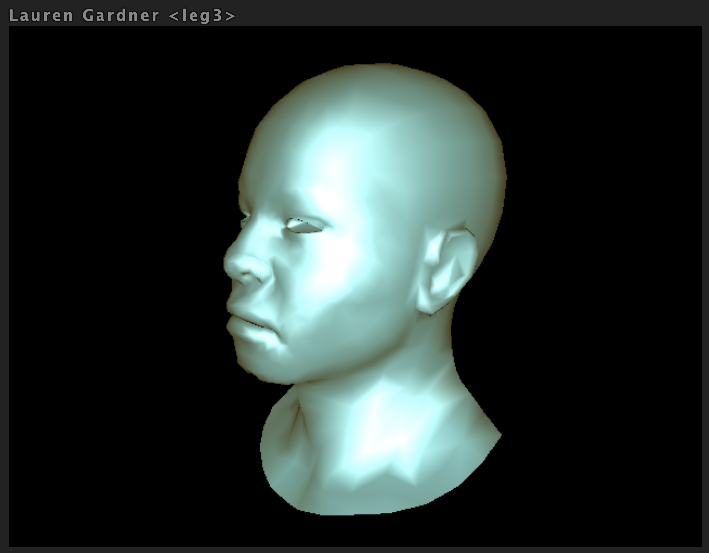
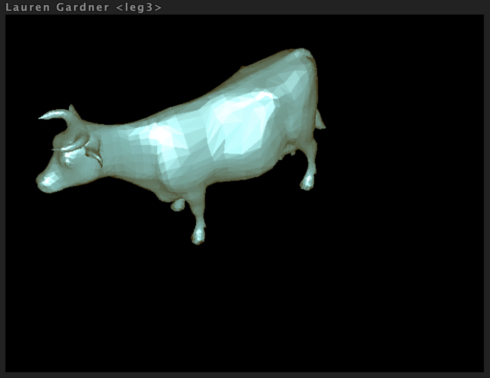
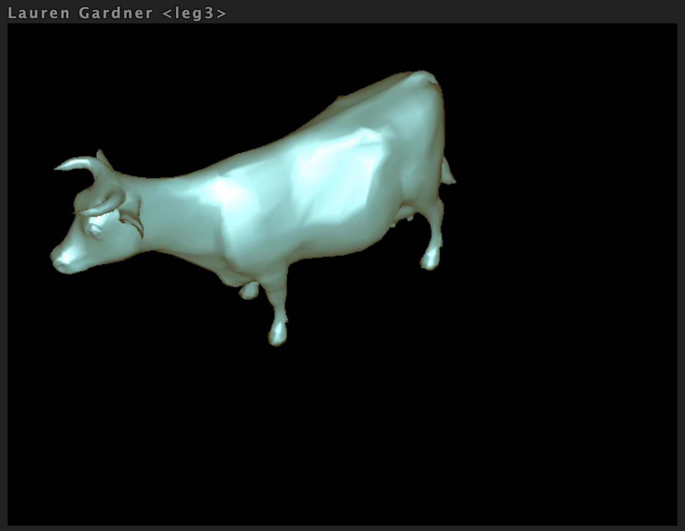
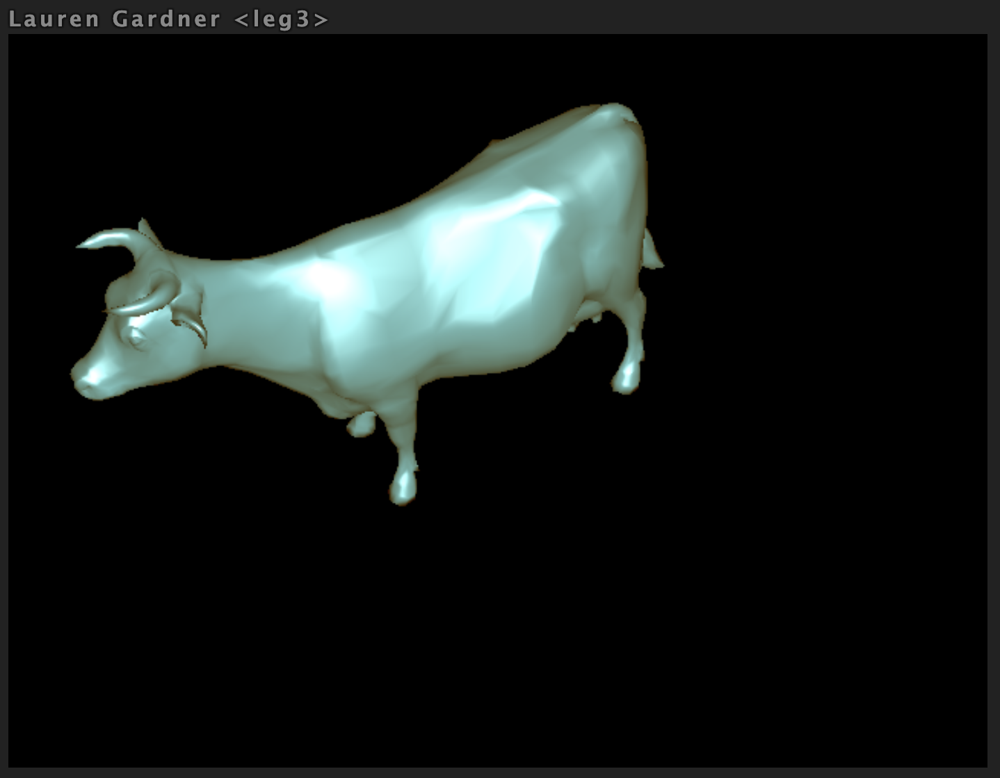
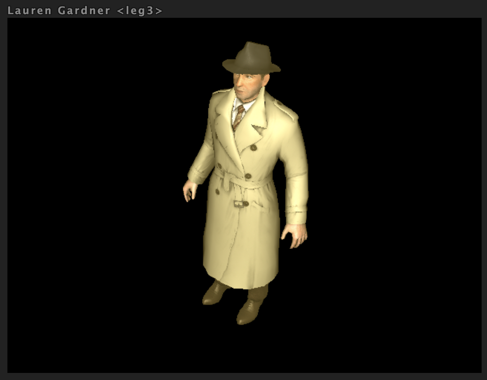
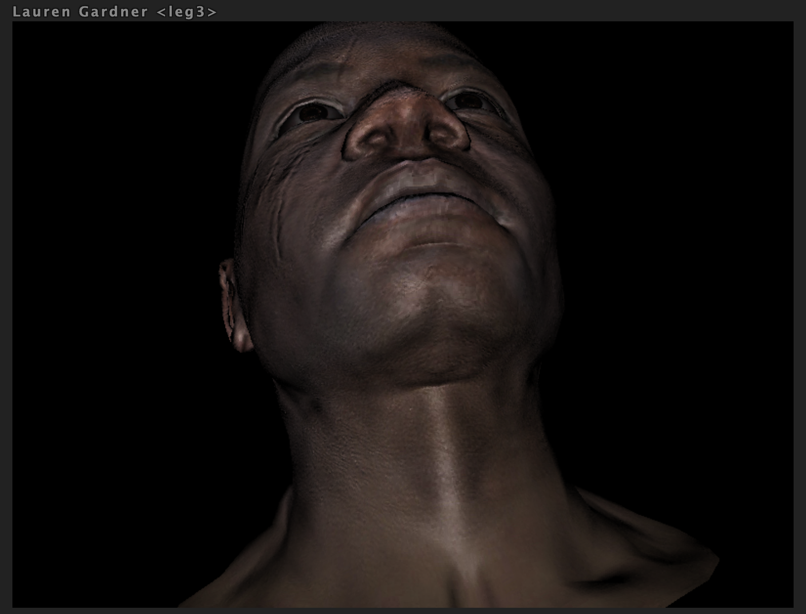

COS426 Assignment 4 — Rasterizer
Switch to: Interactive Renderer
that all images in this writeup were generated directly by my solution code or provided by the course staff (exception: art contest submissions may pass through intermediary software like GIMP)
that no other student has viewed my writeup explanations or my writeup images
that my solution code is my own work; particularly that my solution was not copied from any other student's solution code, and that no other student copied their solution directly code from me
that I did not discuss assignment specifics or view the solution code of any other student besides that of my (optional) partner
that I have followed all other course collaboration and course plagiarism policies as written on the course website.
Lauren Gardner leg3
Collaborated with: N/A
Features Implemented:
- (2.0) Perspective Projection
- (1.0) Phong Reflection Model
- (1.0) Bounding Box
- (1.0) Barycentric Coordinates
- (2.0) Flat Shader
- (2.0) Gouraud Shader
- (2.0) Phong Shader
- (2.0) Diffuse and Specular Mapping
- (2.0) XYZ Normal Mapping
Perspective Projection
To implement perspective projection, I first looped through the provided verts and applied the given matrix to a vector4 copy of them
I then took the copy and divided each x, y, z coordinate by the w value in that vector. If it was outside of the bounds (-1, 1), I
returned undefined. I then moved the coordinates so that they were within camera view.
Camera=[2.8646,2.2455,1.5975];[0.47999,-0.82485,0.29873];[0,0,0]&Mesh=cube.obj;false&Resolution=320x240&Shading_Model=Wire&Ambient=[0,0,0]&Diffuse=[255,255,255]&Specular=[255,255,255]&Shininess=5

Phong Reflection Model
I calculate the reflect value, clone the normal value, and calculate the respective specular value to then add to the color variable. At this
point I also added the ambient value to the color.

Bounding Box
I computed the min x and y values of the 3 verts passed in. I then computed the max x and y values as well. If any of these were below 0 or greater than the image width or height respectively, then I clamped them to either 0 or image width or height depending on if I was comparing x values or y values.
Barycentric Coordinates
I computed the Barycentric Coordinates using the formula provided and the 3 verts passed in. If any of the final weighted values were below 0, I returned undefined, else I just pushed the weighted values to triCoords and returned.
Flat Shader
I first computed the face normal and centroid of the face. Looped through every pixel in the bounding box calculating their
color using the phong reflection model and set the pixels color if it is visible in its current position.
Camera=[-3.7257,4.6729,1.6024];[-0.62123,-0.64694,0.4422];[0,0,0]&Mesh=cow.obj;false&Resolution=640x480&Shading_Model=Flat&Ambient=#483c14&Diffuse=#2d87ac&Specular=#a2c9d2&Shininess=5

Gouraud Shader
I computed each color from the supplied array of verts, and checked that it was visible in it's current depth. While looping through the vertices in the bounding box,
I calculated the pixel color using a the barycentric values as weights.
Camera=[-3.7257,4.6729,1.6024];[-0.62123,-0.64694,0.4422];[0,0,0]&Mesh=cow.obj;false&Resolution=640x480&Shading_Model=Gouraud&Ambient=#483c14&Diffuse=#2d87ac&Specular=#a2c9d2&Shininess=5

Phong Shader
I interpolate both the coordinates and the normals to use in the color computation. Checked if the vertex was visible at the current depth and then applied the coloring to the vert.
Camera=[-3.7257,4.6729,1.6024];[-0.62123,-0.64694,0.4422];[0,0,0]&Mesh=cow.obj;false&Resolution=640x480&Shading_Model=Phong&Ambient=#483c14&Diffuse=#2d87ac&Specular=#a2c9d2&Shininess=5

Diffuse and Specular Mapping
I interpolated the UV coordinates of the pixels inside the triangle using barycentric coordinates. Then, I looked up the material for that pixel and used it for XYZ Normal Mapping as well.
Camera=[-1.1618,1.5919,2.0102];[-0.35231,-0.82205,0.44734];[0,0,0]&Mesh=boggiebody.obj;true&Mesh=boggieeyes.obj;true&Mesh=boggiehead.obj;true&Resolution=640x480&Shading_Model=Phong&Ambient=#483c14&Diffuse=#2d87ac&Specular=#a2c9d2&Shininess=5

XYZ Normal Mapping
I first identified the pixel to use for the XYZ mapping. To calculate the XYZ based on rgb, I used the formula given on the assignment description "XYZ = 2 * RGB - 1" and used the rbg values of the
normals.
Camera=[0.24217,-1.1267,1.6445];[0.10907,-0.81248,-0.5727];[0,0,0]&Mesh=afrhead.obj;true&Mesh=afreye.obj;true&Resolution=800x600&Shading_Model=Phong&Ambient=[0,0,0]&Diffuse=[255,255,255]&Specular=[255,255,255]&Shininess=5
